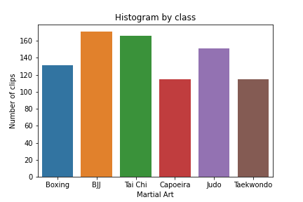
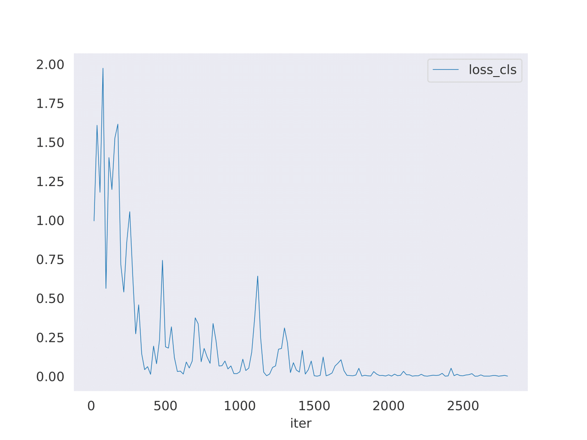
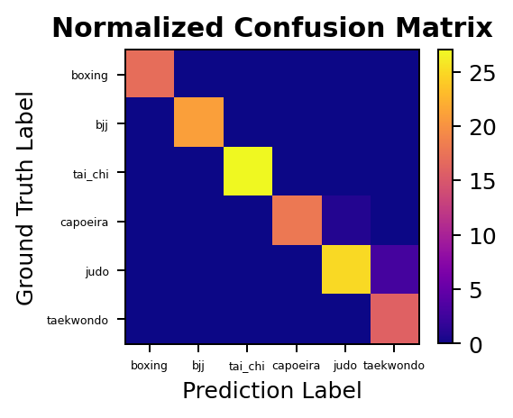
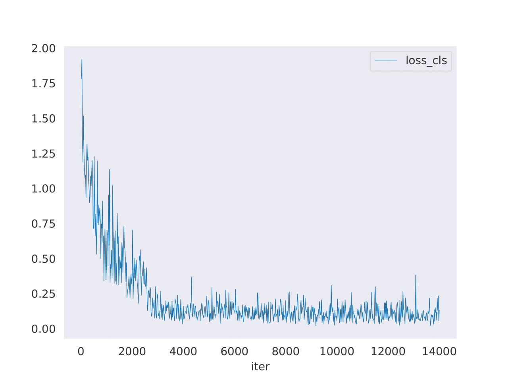
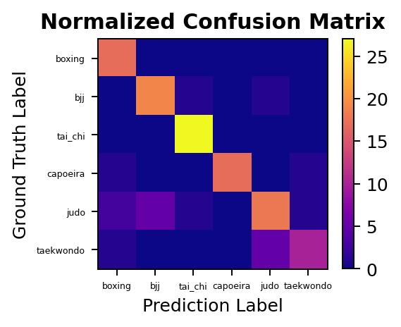

Building a state of the art computer vision classifier in an unexplored domain.
"I fear not the algorithm who has practiced 10,000 kicks once, but I fear the algorithm who has practiced one kick 10,000 times."
In this project we build and train a computer vision system to accurately classify different styles of martial arts.
To achieve this, state of the art Human Action Recognition (HAR) techniques in the realm of video learning were adapted to the problem at hand.
A completely new dataset was built to train this ML model, from publicly available video data. This is in opposition to motion capture data, which would offer a clean and controlled data source but expensive and restrictive in the landscape of possible applications. The internet is a massive database of readily available real world data and the goal is to develop a ML model that can learn from it; a final product more suited for its use in real world applications.
First we develop a classifier trained on the 3D RGB video data, obtaining a high-precision model with a mean class accuracy of 97.34% in only a few epochs. We go one step further though, since we want the system to learn the intrinsic motions that characterize each martial art, so we also develop a skeleton based model. Below we present an example of how this latter architecture works:
This project was developed as a fun side-project, with no commercial purposes in mind. However, the initial success of this endeavor shine a positive light on the possible applications and use-cases, whether in the realm of video security, entertainment or videogame industry, and more. Next, we briefly summarize the workings of the models and the dataset, for the interested reader (for the even more interested reader, you can find some example code in this link ).
As noted before, a new dataset was developed in order to train the models. Naturally, using motion capture techniques would generate a lot of clean and controlled data, which would simplify considerably the work of the neural network. However, we want the model to be able to learn from the already available massive amount of real world video data. For that reason, the dataset was composed of publicly available videos of people practicing martial arts in a wide variety of scenarios (different amount of practitioners, differing backgrounds, distinct video qualities, filming angles, etc). This complicates the classification problem but makes the result much more applicable and generalizable.
For the first built dataset, six popular martial arts were chosen as classes: Boxing, Brazilian Jiu-Jitsu (BJJ), Tai Chi, Capoeira, Judo and Taekwondo. These disciplines were chosen not just because of their popularity but also because of the notable physical difference among them, as a first approach to this problem. A number of videos were obtained from the web from differing search queries to represent a wide array of scenarios. A script was developed to extract a consistent amount of ~10 seconds-clips from this batch of videos. After a period of manually cleaning the extracted clips, a first dataset of 849 clips was constructed. It was then split into training, validation and testing subsets as is customary, in a chosen split of (0.7, 0.15, 0.15). The distribution of this first (full) dataset among the classes can be seen in the histogram below.

The manual labor that went into cleaning and checking the labels of each clip, is a considerable strength of this dataset. This gives confidence in the usefulness of each video and the reliability of the labels. The biggest weakness, however, is its size. An extension of this dataset is currently being developed, since it's a straightforward task, but one with considerable computation and hardware requirements.
We note that the dataset is only slightly imbalanced, with some classes being overrepresented in comparison with others. This is also intended to be amended in the second and larger version of the dataset.The generated dataset will be used to train two different kinds of architectures: one that learnes from the full 3D RGB data, and another that will learn purely from skeleton data. Different architectures were tried for each case, we present here the ones that gave the best results.
The models and training were developed under the framework of MMAction2. Training for all models was done using the GPUs available in the free version of Google Colab.
For the RGB-based modeling the highest performing architecture was that of the TimeSformer model, which adapts the standard Transformer architecture to achieve state of the art results in video learning. To finetune this architecture, we start from the TimeSformer model pre-trained on the Kinetics-400 dataset, and adapt it for training in our custom dataset.

To the left, we can see a plot of the loss function after only 10 epochs. We see that it rapidly decreases down to a small stable value, consistent with the improvement in accuracy that was observed throughout training (as was the case for the accuracy in the validation set, which was routinely checked to avoid overfitting). However, training was substantially slow, which is something to be improved in the second version of this project (for example, by reducing the quality of the input videos in the data pipeline).

We can then analyze performance on the test set, for which we obtain a mean class accuracy of 97.34% (top1_acc: 0.9688, top5_acc: 1.0000), which is quite high for such a short training regime. We can also plot the confusion matrix for this model, and see how few mistakes it actually does in the test set. All in all, a highly successful model but we recall that it learns from the full RGB video data. We want to go one step further and train a model to learn just from the motion of each martial art practitioner.
For the skeleton-based modeling the highest performing architecture was that of the PoseC3D model, which relies on 3D heatmaps instead of graph convolutional networks to achieve state of the art results. The pre-trained architecture used was that of PoseC3D model on the UCF101 dataset. After adapting it to our dataset, and generating the necessary skeleton annotations for all clips, we proceeded with the training.

To the left, we can see a plot of the loss function after 50 epochs. We again see its rapid decrease and here the model could have actually been stopped several epochs earlier. Training was reasonably fast, given that most of the hard work was done before in generating the skeleton annotations. We then proceed to evaluating the model on the designated test set.

On the test set we obtain a mean class accuracy of 84.46% (top1_acc: 0.8438, top5_acc: 0.9844), which is reasonably high but lower than the 3D RGB model. We see from the confusion matrix, however, that the performance varies a lot by class. Some difficulties were to be expected, for example the fact that the skeleton based model has issues distinguishing the grappling martial arts of judo and BJJ. From manual examination of the generated skeleton annotations for these cases, one can see that complications arise in distinguishing two different people when they are that close together with interweaving limbs. This difficulty could be addressed by manually improving the skeleton generation for the grappling martial arts so that it correctly learns to distinguish these situations.
This was an overview of a first approach examination of the application of state of the art HAR techniques to an unexplored domain, the world of martial arts. The proposed objectives of the project were all satisfactorily achieved, and many possible extensions of this work have arisen and are left for future endeavors. In particular, we name below the main highlights of both these categories.